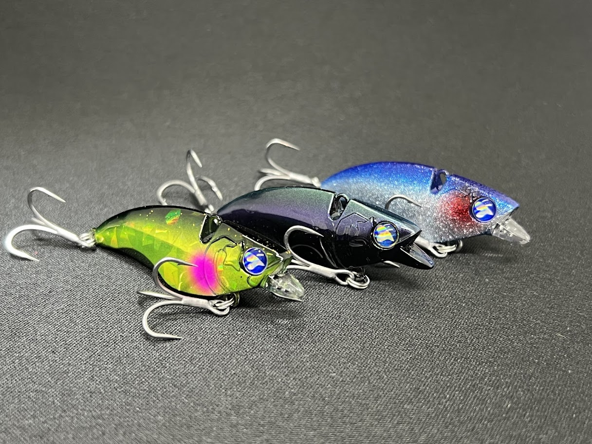
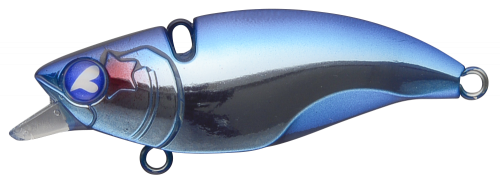
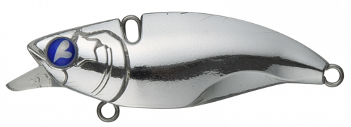
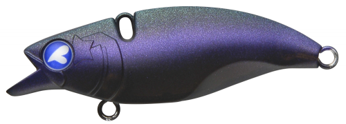
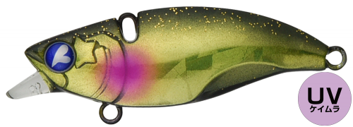

ナレージ50(Narage 50)
ナレージ50(Narage 50)はBlueBlue（ブルーブルー）のシンキングバイブレーションです。
「飛んで沈んで、だけどスローに引ける」をコンセプトに、偏平ボディ独特のスパイラルフォールとデッドスロー対応の安定したバイブレーションアクションが特徴。バイブレーションでありながらスローに引けるという矛盾を解決し、シーバスゲームの全レンジをカバーする一本。クロダイ・キビレへの実績も高く、チニングでも活躍します。

スペック
- メーカー
- BlueBlue（ブルーブルー）
- 長さ
- 50 mm
- 重さ
- 12 g
- フック
- ST-36BC #10×2
- リング
- #2
- レンジ
- 全レンジ（リトリーブ速度で調整）
- タイプ
- バイブレーション
- 沈下タイプ
- シンキング
- アクション
- バイブレーション
- ターゲット
- シーバス・クロダイ・キビレ
- 価格
- 1,716円（税込）
- 発売日
- 2018年
▼今すぐチェック

ナレージ50の特徴
飛んで沈んで、スローに引ける——偏平ボディが生み出すスパイラルフォールとボトム対応力
-
フリーフォールで「スパイラルフォール」が炸裂
偏平ボディがフリーフォール時に横倒れしながららせん状に弧を描く「スパイラルフォール」を発生。この独特のフォールが捕食スイッチを入れる。テンションを抜けば真っ直ぐなカーブフォールにもなり、2種を使い分けられる。
-
デッドスローリトリーブでもしっかり泳ぐ
「速く巻かないと泳がない」というバイブレーションの常識を覆し、表層直下からボトムまで全レンジをスローで引ける。低活性のシーバスにじっくり見せて食わせられるのが最大の強み。
-
独自開発のボディ形状でエビらない
バイブレーションにしては驚異のエビりにくさで、初心者〜上級者に愛される性能。開発の際には水中映像を撮影してエビる現象を研究し、今のボディ形状にたどり着いたという。
ナレージ50の使い方
基本はただ巻き。キャスト後にカウントダウンで任意のレンジまで沈め、デッドスロー〜ミディアムでリトリーブする。速度を変えるだけで表層直下からボトム付近まで自在にレンジを刻めるのがナレージ50の強み。反応がなければリトリーブ中に一瞬テンションを抜いてフリーフォールを挟むと、スパイラルフォールが発生してリアクションバイトを誘発できる。流れの中ではドリフトで漂わせる使い方も有効。
チニングで使う場合は、ボトムまで落としてからスローリトリーブでボトムを舐めるように引く「ズル引き」や、リフト＆フォールを繰り返す「ボトムバンプ」が基本になる。
ナレージ50の得意な状況
冬〜早春の低活性シーバスに滅法強い。水温が下がってシーバスがボトム付近に沈み、速いバイブレーションを追えない状況でも、デッドスローでじっくり見せて口を使わせられる。バチ抜けパターンのフォロールアーとしても実績が高く、表層に出ないシーバスにレンジを下げてアプローチできる。港湾・河口・都市型河川で幅広く機能する。
サブターゲットとしてクロダイ・キビレにも有効で、ボトムゲームシーズンのチニングでも頼れる一本になる。
釣れるワンポイント
「巻く→フォール→巻く→フォール」のリズムを意識するとバイトが増えるぞ。フォールで見せて、巻きで気づかせるイメージ。根掛かりが怖い場所ではボトムより少し上のレンジをキープして巻くと、根掛かりを減らしながら探れる。
「安いから」と手を出すと釣れないだけでなく、本家の性能を誤解したままになってしまう。必ずBlueBlue正規品を購入しよう。
人気カラー

#01 ブルーブルーブランド代表のブルー系カラー。澄み潮・デイゲームのシーバス狙いの定番。

#13 スパークシルバーフラッシング力の高いシルバー系。ベイトライクにデイゲームで広く使える。

#17 イガイブラックイガイ（貝）を意識した黒系カラー。ローライト・ナイトやチニングでも実績。

#20 ランガンバレットブルーブルー人気のランガンバレット系カラー。オールラウンドに使える1軍色。
画像出典:ブルーブルー公式HP
ナレージ50に似ているルアー
- ミニエント57S（ダイワ）——ほぼ同じサイズ感のコンパクトバイブレーション。ナレージ50と使用シーンが最も近く、比較・ローテーション対象になる定番。
- レンジバイブ55ES（バスデイ）——シーバス用コンパクトバイブの絶対的定番。ナレージ50がスパイラルフォールとデッドスロー対応に振っているのに対し、レンジバイブは巻きの安定感と実績で選ばれる。
- ナレージ65（ブルーブルー）——同シリーズのサイズアップ版。ベイトが大きい時・飛距離が必要な時・より強い波動でアピールしたい場面はこちら。